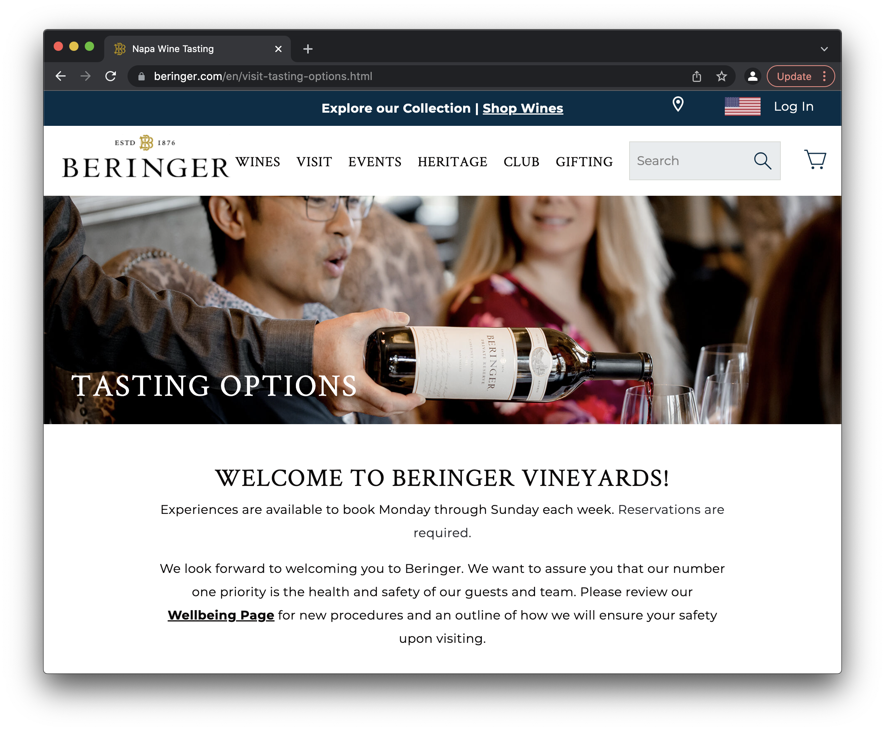
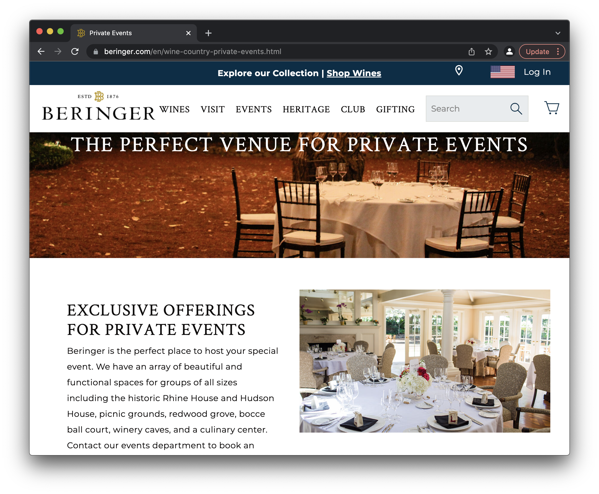
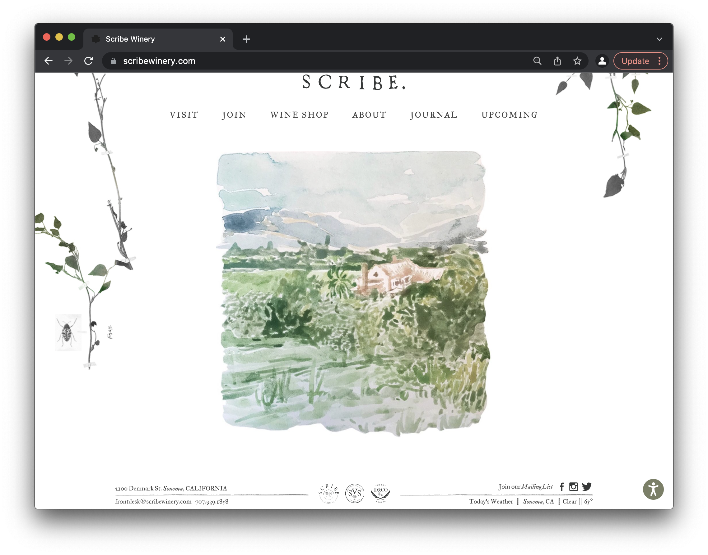
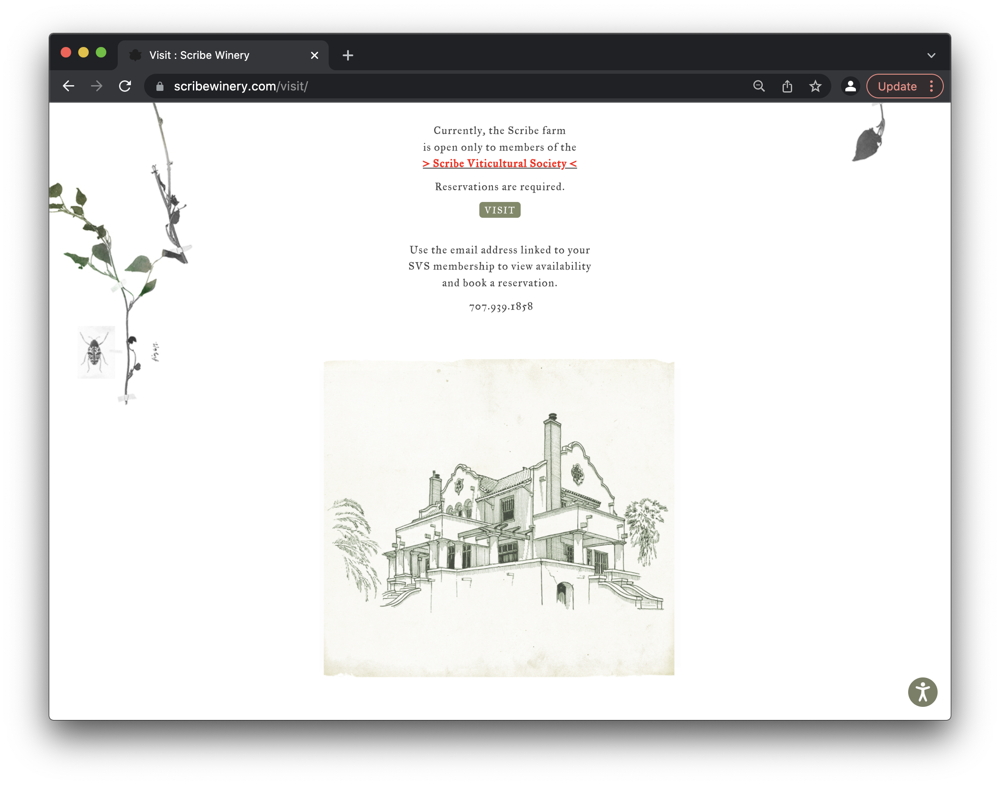
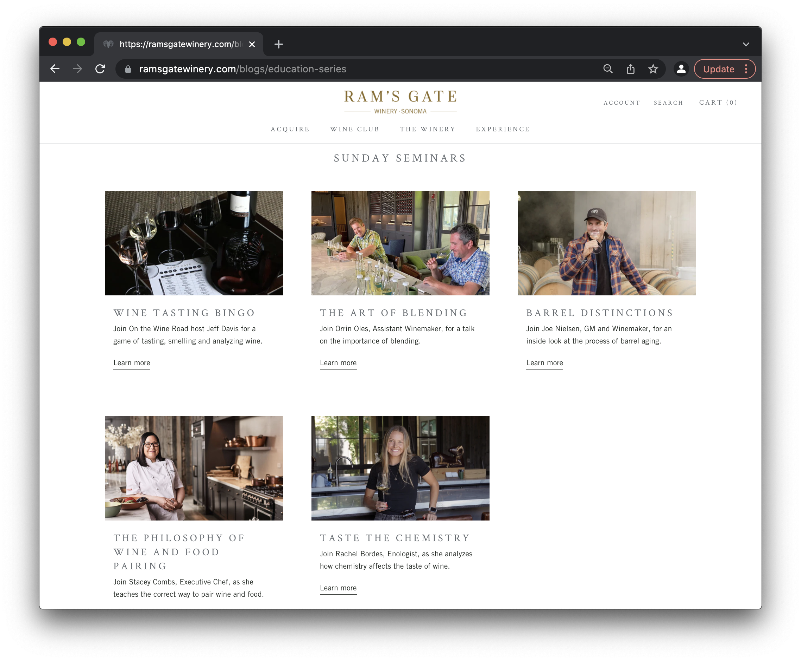
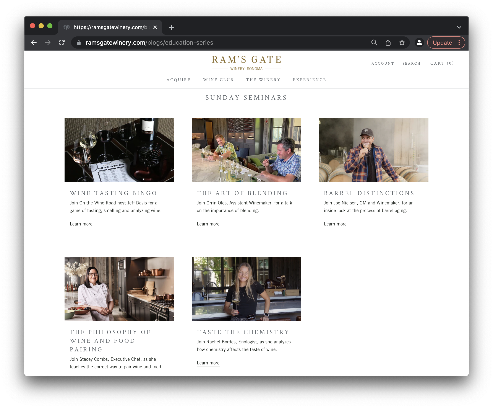

Final project proposal
Introduction
Dreamland Winery
Winery in the rolling hills of San Luis Obispo that offers wine tasting and tours of the property. Dreamland Winery offers seminars that teach about the entire winemaking process, from grape harvesting through bottling. The most special aspect of Dreamland Winery is the wine tastings that only start 2 hours before sunset every night, so guests can enjoy the wine as the sun goes down and the sky is painted in beautiful colors.
Target audience
The people who use this site as a place to learn about winemaking is anyone of legal age, 18 and over. The people who use this site as a place to winetaste exclusively at sunset is anyone of legal drinking age, 21 and over.
It is a private winery that only takes reservations, no walk in availability, but is a destination activity for tourists coming to see the Dreamland experience in San Luis Obispo. It is meant as a place of stress-free learning as well as relaxation and enjoyment for vacationers.
Comparative analysis
Gardens at Beringer Vineyards in Napa Valley
 Scribe Winery
 Ram's Gate Winery
 

Website content
About Dreamland
A special site where the vineyard is positioned to have the greatest sunset view in San Luis Obispo. Dreamland Winery started in hopes of emphasizing the beauty of winemaking from start to finish. A winery created to bring people together from all over the world, to enjoy a magical evening with loved ones. Sensitive to the natural landscape, fueled by true commitment to quality, the Dreamland journey always draws you back to the rolling hills of San Luis Obispo.
Sunset sky across the mountains and hills of the San Luis Obispo coast.
Experience the Dream
The exclusive luxury wine program at Dreamland consists of a world-class tasting experience from our breathtaking sunset views to our locally sourced pairings. When combined, this wine tasting experience is truly incomparable to anywhere else. To book a reservation, call 805-511-3344 and find out when you will be able to experience the dream. Anyone 21 years of age or above is welcome to participate.
Painting of wine glasses clinking before a sunset view of the San Luis Obispo coast.
Seminars
To learn more about the winemaking process, here is a look into the variety of seminars that Dreamland Winery offers every week. Dreamland teaches about four basic components of the winemaking process: harvesting, crushing and pressing, fermentation, and aging and bottling. In order to reserve a seat in a weekly seminar, call 805-511-7788 to find out more about availability. Anyone 18 years of age or above is welcome to sit in.
Smiling group of people who are picking grapes in the vineyard.